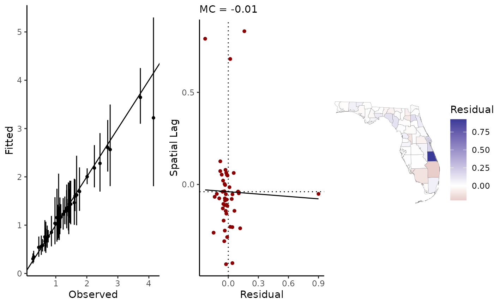
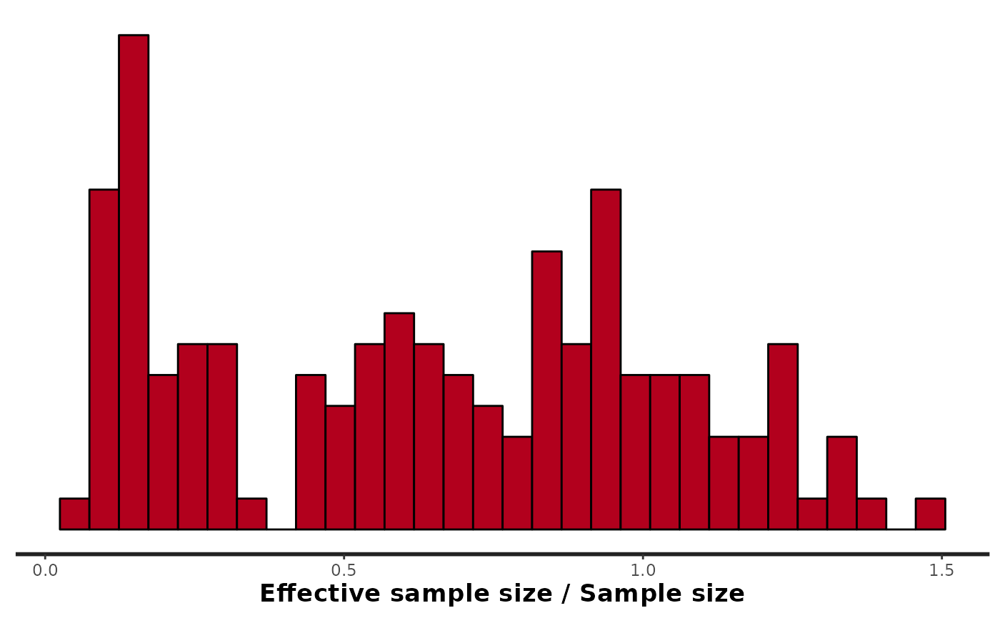
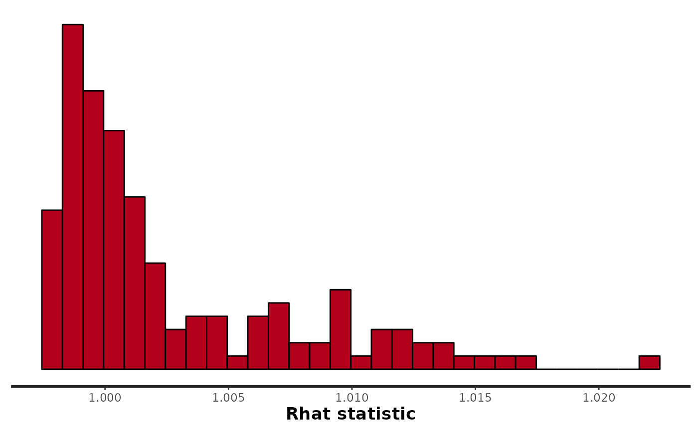

Intrinsic autoregressive models
stan_icar.RdFit regression models using intrinsic conditional auto-regressive (ICAR) spatial parameter model. Options include the BYM model, the BYM2 model, and a solo IAR term.
stan_icar( formula, slx, re, data, type = c("iar", "bym", "bym2"), scale_factor = NULL, ME = NULL, C, EV, family = poisson(), prior = NULL, prior_intercept = NULL, prior_tau = NULL, centerx = FALSE, scalex = FALSE, prior_only = FALSE, chains = 4, iter = 2000, refresh = 500, pars = NULL, control = list(adapt_delta = 0.9, max_treedepth = 15), silent = FALSE, ... )
Arguments
| formula | A model formula, following the R formula syntax. Binomial models can be specified by setting the left hand side of the equation to a data frame of successes and failures, as in |
|---|---|
| slx | Formula to specify any spatially-lagged covariates. As in, |
| re | If the model includes a varying intercept term (or "spatially unstructured random effect") specify the grouping variable here using formula synatax, as in |
| data | A |
| type | Defaults to "iar" (partial pooling of neighboring observations through parameter |
| scale_factor | For the BYM2 model, optional. If missing, this will be set to a vector of ones. Must be an n-length vector. |
| ME | To model observational error (i.e. measurement or sampling error) in any or all of the covariates or offset term, provide a named list. Errors are assigned a Gaussian probability distribution and the inferred `true' covariate is assigned a Student's t model with optional spatially varying mean. Elements of the list a dataframe with standard errors for each observation; columns will be matched to the variables by column names. The names should match those from the output of If any variables in A numeric vector of length two providing the upper and lower bounds, respectively, of the bounded variables. Defaults to Logical value indicating if the models for covariates should include a spatially varying mean (using an eigenvector spatial filter). Defaults to Optional prior parameters for the regularized horseshoe (RHS) prior used for the ESF data model; only used if if you have an offset term with measurement error, include a vector of standard errors to the list and assign it the name |
| C | Spatial connectivity matrix which will be used to construct an edge list, and to calculate residual spatial autocorrelation as well as any user specified |
| EV | A matrix of eigenvectors from any (transformed) connectivity matrix (presumably spatial). See make_EV and shape2mat. |
| family | The likelihood function for the outcome variable. Current options are |
| prior | A |
| prior_intercept | A vector with location and scale parameters for a Gaussian prior distribution on the intercept; e.g. |
| prior_tau | Set hyperparameters for the scale parameter of exchangeable random effects/varying intercepts. The random effects are given a normal prior with scale parameter |
| centerx | Should the covariates be centered prior to fitting the model? Defaults to |
| scalex | Should the covariates be centered and scaled (divided by their standard deviation)? Defaults to |
| prior_only | Draw samples from the prior distributions of parameters only. |
| chains | Number of MCMC chains to estimate. Default |
| iter | Number of samples per chain. Default |
| refresh | Stan will print the progress of the sampler every |
| pars | Optional; specify any additional parameters you'd like stored from the Stan model. |
| control | A named list of parameters to control the sampler's behavior. See stan for details. The defaults are the same |
| silent | If |
| ... | Other arguments passed to sampling. For multi-core processing, you can use |
Source
Besag, J. (1974). Spatial interaction and the statistical analysis of lattice systems. Journal of the Royal Statistical Society: Series B (Methodological), 36(2), 192-225.
Morris, M., Wheeler-Martin, K., Simpson, D., Mooney, S. J., Gelman, A., & DiMaggio, C. (2019). Bayesian hierarchical spatial models: Implementing the Besag York Mollié model in stan. Spatial and spatio-temporal epidemiology, 31, 100301.
Riebler, A., Sorbye, S. H., Simpson, D., & Rue, H. (2016). An intuitive Bayesian spatial model for disease mapping that accounts for scaling. Statistical Methods in Medical Research, 25(4), 1145-1165.
Value
An object of class class geostan_fit (a list) containing:
Summaries of the main parameters of interest; a data frame
Widely Applicable Information Criteria (WAIC) with crude measure of effective number of parameters (eff_pars) and
mean log pointwise predictive density (lpd), and residual spatial autocorrelation (Moran coefficient of the residuals). Residuals are relative to the mean posterior fitted values.
an object of class stanfit returned by rstan::stan
a data frame containing the model data
The edge list representing all unique sets of neighbors
the user-provided or default family argument used to fit the model
The model formula provided by the user (not including ICAR component)
The slx formula
A list containing re, the random effects (varying intercepts) formula if provided, and
Data a data frame with columns id, the grouping variable, and idx, the index values assigned to each group.
Prior specifications.
A list with the center and scale parameters returned from the call to base::scale on the model matrix. If centerx = FALSE and scalex = FALSE then it is an empty list.
A data frame with the name of the spatial component parameter ("ssre") and method (toupper(type))
Details
The Stan code for the ICAR component of the model and the BYM2 option follows Morris et al. (2019). The ICAR component is returned in the parameter named ssre (spatially structured random effect).
For all models, the ICAR prior is placed on the parameter vector phi; it is scaled by the scalar parameter spatial_scale, specified as follows.
For type = "iar", the spatial structure is simply ssre[i] = phi[i] * spatial_scale.
For type = "bym", the spatial structure ssre is the same as "iar" but an additional parameter vector theta is added to perform partial pooling across all observations (a `spatially unstructured random effect' sure), and sure[i] = theta[i] * theta_scale. The sum phi * spatial_scale + theta * theta_scale = ssre + sure is often referred to as the ``convolved random effect.''
For type = "bym2", ssre and sure share a single scale parameter (spatial_scale) but they are combined using a mixing parameter rho. The ``convolved random effect'' is then [sqrt(rho / scale_factor) * phi + sqrt((1 - rho)) * theta] * spatial_scale. The terms are factored out to obtain sure and ssre.
See also
Examples
# \dontrun{ library(ggplot2) library(sf) library(rstan) options(mc.cores = parallel::detectCores()) data(sentencing) C <- shape2mat(sentencing) log_e <- log(sentencing$expected_sents) fit.bym <- stan_icar(sents ~ offset(log_e), re = ~ name, family = poisson(), data = sentencing, type = "bym", C = C, refresh = 0 )#> #>#>#>#>#> #>#>#>#>#>#> Warning: Bulk Effective Samples Size (ESS) is too low, indicating posterior means and medians may be unreliable. #> Running the chains for more iterations may help. See #> http://mc-stan.org/misc/warnings.html#bulk-ess# diagnostics plot: Rhat values should all by very near 1 library(rstan) rstan::stan_rhat(fit.bym$stanfit)#># see effective sample size for all parameters and generated quantities # (including residuals, predicted values, etc.) rstan::stan_ess(fit.bym$stanfit)#>#>library(bayesplot) yrep <- posterior_predict(fit.bym, samples = 75) y <- sentencing$sents ppc_dens_overlay(y, yrep)# }